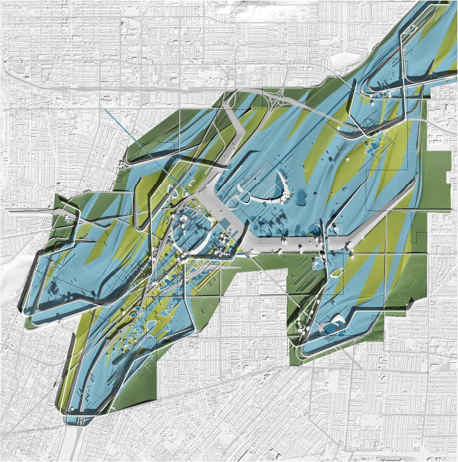
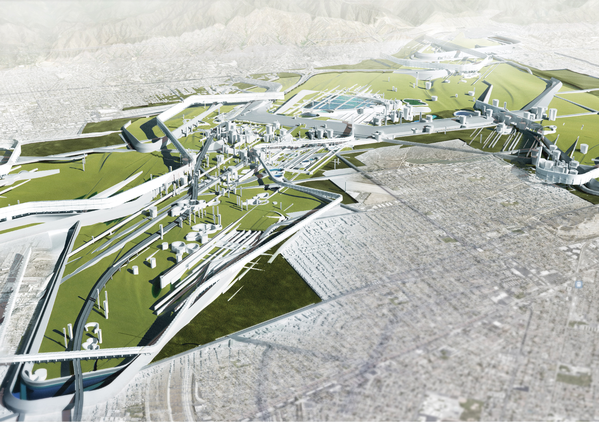
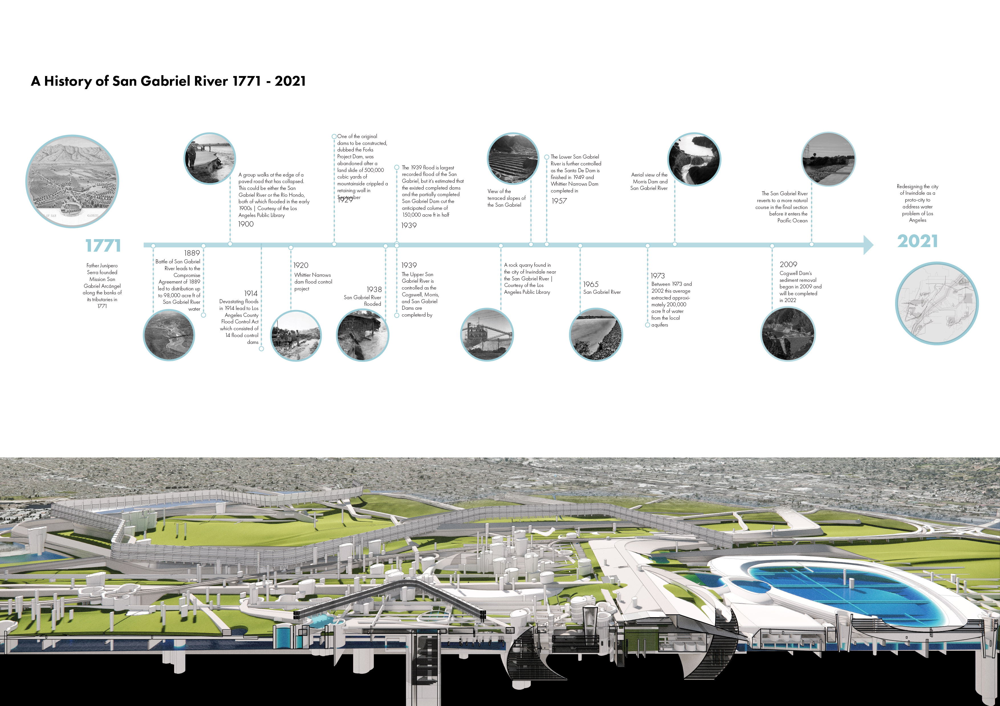
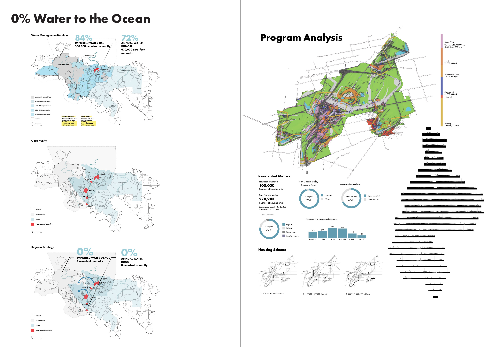
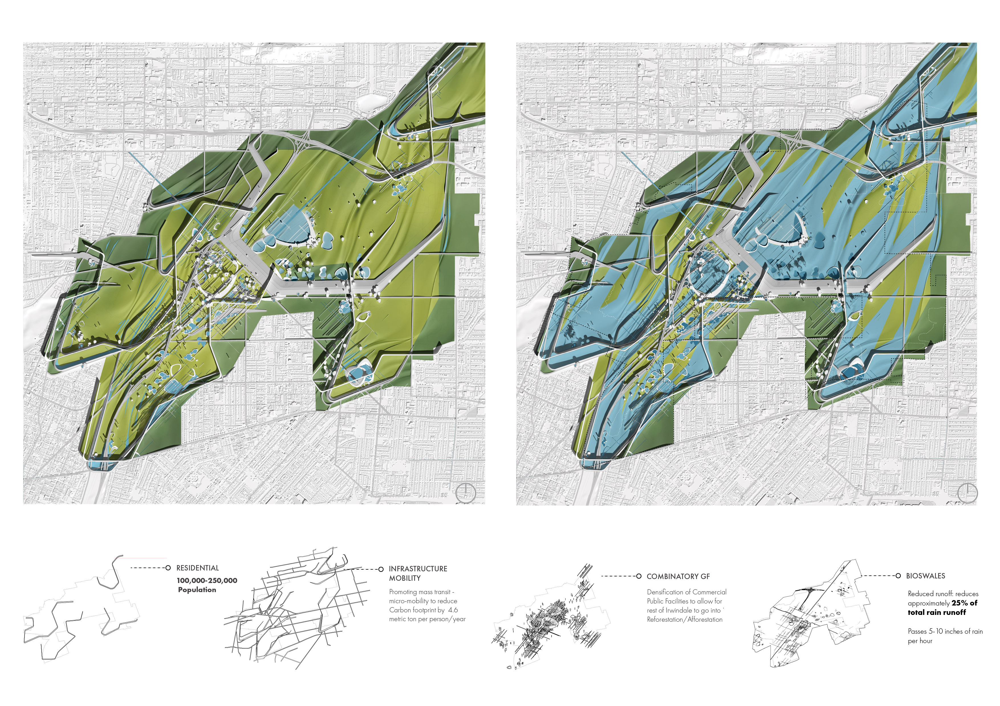

SCI-Arc · Design of Cities
HYDRANTIS
Irwindale Reimagined / Urban Infrastructure
The San Gabriel River has been managed, channelized, and redirected for 250 years — yet its flood infrastructure remains entirely invisible to the settlements built around it. Hydrantis proposes to reverse this: a proto-city whose street grid, housing typology, and public space are derived entirely from the flood management system. Through GIS-based hydrological mapping, archival research, and computational modeling in Grasshopper, the project reconstructs Irwindale's relationship to water as a generative urban logic rather than an engineered constraint. Street networks follow the geometry of natural drainage paths, public spaces double as retention and detention landscapes, and riparian corridors are restored as ecological spines that structure neighborhood identity. The result is an urban framework in which infrastructure is no longer buried beneath the city but becomes the very armature from which civic life emerges.
** Exhibited at SCI-Arc Symposium 2021
Overview
A ground plane designed for two simultaneous states: normal conditions and the 100-year flood.
The proposal creates a city of 250,000 residents where infrastructure is never hidden. By designing for an extreme hydraulic event, the daily reality of water management is woven deeply into public life.
In collaboration with Artem Panchenko, Charlie Allen, and Ricardo Rodriguez.
Project Documentation
Mapping the San Gabriel watershed and proposing an inhabited flood system.



